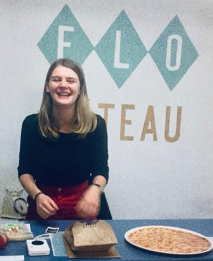

How it all started
I am Flo, also known as Flogâteau. Ever since I was a toddler, I love to bake. From baking chocolate cakes and licking the pots from top to bottom, to making chocolates with a friend after school and bringing a giant cupcake as a treat for my birthday. I started doing all of this from a very young age. In the sixth grade I knew for sure: I wanted to be a pastry chef! Over the years, that hobby grew into a passion.
Flogâteau throughout the years
I started my small business of home baked goods to go under the name Flogâteau, a name my mom came up with. A friend gave me my very first logo which I gave my orders a nice 'finishing touch'. From the age of 15, I took a course in pastery at COOVI in Anderlecht every Saturday. From that moment, my hobby became my profession.
In high school, we had to think about our future study choices and I quickly made up my mind: I had to become a pastry chef. I soon started looking for a suitable education course. It was more difficult than I expected, but in the end we came across an ideal education: the post-secondary training in bakery/pastery/chocolate in Ter Groene Poorte, Bruges. I graduated from Mabo in Brussels and received my own first professional logo and a website for Flogâteau as a graduation gift! Since that moment, I am now a student-entrepreneur.